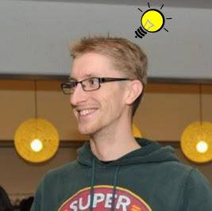

Name: Jori Liesenborgs
Date of birth: July 11, 1978
Address: (address available on request)
Phone: (phone available on request)
E-mail: jori.liesenborgs@gmail.com
2006 - 2010: PhD in physics at UHasselt
2000 - 2005: MSc physics at UHasselt/UGent
1996 - 2000: MSc computer science at School for Knowledge Technology (UHasselt/Maastricht University)
2017 - now: assistant professor ('docent') at UHasselt
2015 - 2018: researcher at iMinds/imec
2010 - now: postdoc at EDM/UHasselt
2006 - 2010: PhD scholarship at EDM/UHasselt
2005 - 2006: researcher at EDM/UHasselt
2000 - 2001: researcher at EDM/UHasselt
Dutch: native language
English: fluent
French: basic knowledge
Swedish: very (very) basic knowledge
All publications can be found at UHasselt document server
Astrophysics publications can also be found at ADS
Current h-index: 14
Much experience in C/C++, examples are
Development of executables and libraries for Linux, MS-Windows, OS X
Much experience with Python, for example
Decent experience in JavaScipt, for example in
Android apps:
Experience with Qt for GUI work
Experience with OpenGL, but more with WebGL in browser
Regarding high-performance computing (HPC): experience with OpenCL and CUDA, OpenMP, MPI
Knowledge of Java, but not used actively for many years
Modifications of Chrome/Chromium for research projects (making OpenCL and OpenGL4 available in the browser using JavaScript, making 10-bit color possible)
Optimization/simulation in several contexts, some examples are
Basic (technical) blockchain knowledge (Bitcoin, Ethereum smart contracts)
Many years experience maintaining Linux servers (mainly Debian based); twenty years experience using Slackware Linux as main desktop system
Very basic experience with neural networks, including some hands-on experience with Keras
No experience with Objective C
Haven't used SQL or databases in general actively for a very long time
Only basic web development knowledge, no real experience making nice looking websites and CSS
I hope my experience so far reflects my interests:
in general I like programming, from quite complex C++ frameworks to more straightforward scripts in Python or Bash. In essence, I like creating new, interesting things, and really focus on a topic.
I'm typically more interested in non-GUI aspects (I'd rather write elegant code than make a pretty user interface).
due to my background in both physics and computer science, it should not be a surprise that the overlap (computational science/scientific computing) is usually extra appealing.
Playing the guitar, playing the drums
Geocaching
Walking
Riding my bicycle, riding my motorcycle
Reading